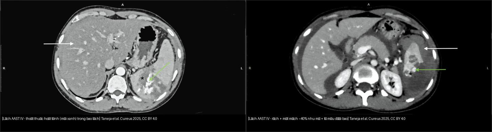
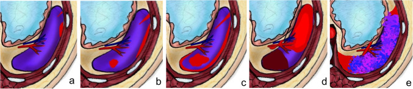
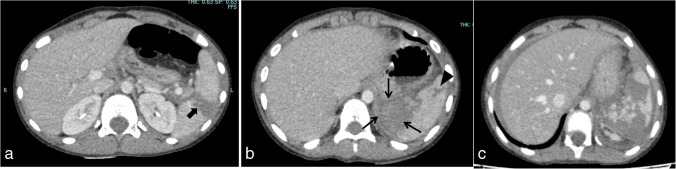
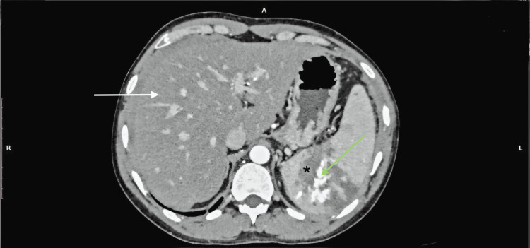
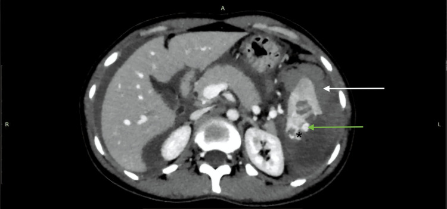

140 — Lách & chấn thương tạng đặc: AAST + thoát thuốc / Spleen & Solid organ trauma
Tags: pattern:chan-thuong-bung vung:lach score:AAST protocol:CT-bung-cap-cuu
Mức chắc chắn (certainty): tổng hợp y văn (literature synthesis) — nhóm tự biên từ y văn mở (review + guideline có số), chưa gắn ca nguyên văn đơn lẻ; 4 ca quiz lấy từ các bài CC BY có số liệu mô tả nguyên văn.
1. Tổng quan — AAST I–V + thoát thuốc hoạt tính quyết định mổ/nút
- AAST-OIS 2018 (lách/gan/thận): I (dưới bao < 10%/rách bao < 1 cm) → II (10–50%/rách 1–3 cm) → III (> 50%, máu trong nhu mô ≥ 5 cm, rách > 3 cm) → IV (rách mạch thùy/cuống → mất mạch > 25%, giả phình/AVF, đường máu đang chảy nhưng CÒN trong bao) → V (vỡ nát/cuống mạch; máu đang chảy ĐÃ vượt bao vào ổ bụng). Điểm sửa 2018: bỏ grade VI, V là cao nhất; thêm thì động mạch để bắt tổn thương mạch.
- TẠI SAO (vật lý CT): phân biệt 3 thứ cùng "tăng tỷ trọng" trong nhu mô vỡ:
- Thoát thuốc hoạt tính (active extravasation): máu đang chảy → ổ tăng tỷ trọng lan rộng và to dần giữa các thì → nút/mổ cấp cứu.
- Giả phình (pseudoaneurysm): túi mạch giữ hình tròn, không to thêm, ngấm đồng thì với ĐM → nút mạch chọn lọc (vỡ muộn chết người nếu bỏ sót).
- Nhồi máu/mất mạch (devascularization): vùng không ngấm ở MỌI thì (khác đụng dập sẽ ngấm lại thì muộn) → đánh dấu mức độ nặng (grade IV khi > 25%).
- Ngưỡng xử trí: huyết động ổn + không thoát thuốc = bảo tồn; thoát thuốc/giả phình + tụt HA = nút mạch/mổ cấp cứu. Phần lớn chấn thương lách kín ở trẻ điều trị bảo tồn (nhất là khi huyết động ổn) — quyết định dựa trên huyết động, không chỉ độ AAST.
- Máu cục canh gác (sentinel clot) 45–70 HU kề tạng vỡ nhất — TẠI SAO: máu đông đặc nhất ở gần nguồn chảy, loãng dần ra xa; chỉ đúng tạng vỡ trong đa chấn thương.
2. Gamut sau chấn thương bụng
- Rách lách + thoát thuốc: nút mạch lách (giữ lách, ngừa nhiễm trùng sau cắt — OPSI).
- Giả phình ĐM lách: nốt ngấm khu trú + chấn thương cũ — nút mạch (vỡ muộn chết người).
- Vỡ gan/thận độ cao + tụt HA: mổ/nút mạch theo AAST + huyết động.
- Tụ máu dưới bao ổn định: bảo tồn + CT lại (theo dõi giả phình muộn).
- Khe lách bẩm sinh / lách phụ (splenule): không phải vỡ — bờ nhẵn, có vỏ bao, không máu quanh.
3. Bảng so sánh phân biệt (ma trận đối chiếu)
| Thực thể (entity) | Hình ảnh điển hình | Chốt vào (rule-in) | Chốt loại (rule-out) | Gợi ý xác nhận |
|---|---|---|---|---|
| Rách lách độ thấp (I–III) | Rách bao/nhu mô ≤ 3 cm hoặc dưới bao < 50%; không ngấm lan | Ổn định + không thoát thuốc | Ổ tăng tỷ trọng to dần giữa các thì → thoát thuốc | CT thì TM; theo dõi |
| Thoát thuốc hoạt tính | Vệt tăng tỷ trọng lan rộng ở thì muộn, kèm tụ máu | Ổ to dần giữa các thì + tụt HA | Ổ giữ hình tròn, không to thêm → giả phình | CT 2 thì (ĐM + TM); nút/mổ |
| Giả phình ĐM lách | Nốt tròn ngấm khu trú đồng thì ĐM, không lan | Nốt tròn giữ hình + chấn thương cũ | Vệt lan rộng → thoát thuốc | CT/CTA; nút mạch chọn lọc (vỡ muộn) |
| Nhồi máu/mất mạch (grade IV) | Vùng không ngấm MỌI thì, hình chêm; > 25% nhu mô | Không ngấm ở cả thì ĐM/TM/muộn | Ngấm lại thì muộn → đụng dập | CT 3 thì; đánh giá % mất mạch |
| Vỡ nát / vượt bao (grade IV–V) | Rách phức tạp, máu vượt bao vào ổ bụng | Máu ngoài bao + mất mạch lan rộng | Máu còn trong bao → grade IV | CT; mổ/nút cấp cứu |
| Khe lách bẩm sinh (cleft) | Đường giảm tỷ trọng bờ nhẵn, có vỏ bao | Bờ nhẵn, không máu quanh | Bờ sắc + máu quanh → vỡ thật | CT; so phim cũ |
| Lách phụ (splenule) | Nốt nhu mô cùng tỷ trọng lách ở rốn lách | Cùng ngấm như lách | Khác tỷ trọng/ngấm → u/hạch | CT; tiền sử cắt lách |

Trái: thoát thuốc hoạt tính (mũi xanh) trong bao lách — máu đang chảy. Phải: rách lớn + mất mạch ~40% nhu mô + tụ máu dưới bao. Nguồn: Taneja et al., Cureus 2025 (CC BY 4.0). Ảnh ghép letterbox.4. Protocol + hệ phân độ
- CT cản quang chấn thương: thì tĩnh mạch (TM) là nền tảng; thêm thì ĐM để bắt thoát thuốc/giả phình/mạch, thì muộn để bắt rò nước tiểu (thận) — luôn MPR/3D. Ở trẻ ưu tiên ALARA (hạn chế chụp lặp vô ích).
- Xử trí lách (2018 + thực hành): huyết động ổn → điều trị bảo tồn; throát thuốc/giả phình → nút mạch lách (SAE) ưu tiên hơn cắt lách để giữ chức năng miễn dịch; cắt lách → tiêm ngừa phế cầu/meningococcus/Hib (ngừa OPSI).
- Giả phình + tụt HA muộn sau chấn thương = vỡ giả phình → CTA + nút mạch ngay.
flowchart TD
A[Chấn thương bụng kín] --> B[CT cản quang: thì TM + ĐM + muộn, MPR]
B --> C{Thoát thuốc / giả phình?}
C -->|Không, ổn định| D["AAST I-III → bảo tồn + theo dõi"]
C -->|Có| E{Huyết động ổn?}
E -->|Ổn| F["Nút mạch lách (SAE) chọn lọc"]
E -->|Tụt HA| G["Mổ/nút mạch cấp cứu + hồi sức máu"]
D --> H["CT lại nếu diễn biến xấu (giả phình muộn)"]
5. Cạm bẫy
- Thoát thuốc tĩnh mạch (muộn mới hiện) giả động mạch — phải so 2 thì.
- Lách phụ (splenule) giả hạch/u — cùng tỷ trọng lách + tiền sử cắt lách.
- Bảo tồn quá đà khi thoát thuốc + tụt HA — nút/mổ, đừng chờ.
- Khe lách bẩm sinh (cleft) giả vỡ — bờ nhẵn + vỏ bao lót + không máu quanh (vỡ là bờ sắc + máu!).
- Lách da báo thì động mạch sớm (zebra spleen) giả đụng dập — thì cửa đồng nhất lại là chốt (đụng dập thật vẫn khuyết!).
- Sentinel clot giúp định vị tạng vỡ trong đa chấn thương — đừng bỏ qua cục máu tăng tỷ trọng 45–70 HU.
6. Tự lượng giá — Blind Quiz (ảnh trơn ngoài, đáp án ẩn trong khối chi tiết)
Ca 1 — Bảng phân độ: nhìn hình, gọi tên độ AAST lách (a–e) trước khi mở đáp án.

- Câu hỏi: Dấu hiệu nào nâng độ từ III lên IV? IV khác V ở điểm nào?
Bấm để hiện đáp án (findings + chẩn đoán)
- a = I (dưới bao < 10%/rách bao < 1 cm); b = II (dưới bao 10–50%, máu trong nhu mô < 5 cm); **c = III** (> 50%, rách > 3 cm); d = IV (tổn thương mạch thùy/cuống → mất mạch > 25%, giả phình/AVF, máu chảy còn trong bao); e = V (vỡ nát/cuống; máu vượt bao vào ổ bụng).
- Chốt nâng III→IV: mạch máu bị tổn thương (mất mạch phân thùy > 25% / giả phình). IV vs V: máu còn trong bao (IV) vs đã vượt bao (V).
- Nguồn ảnh: Mohammad et al., Pediatr Radiol 2025 (PMC12513975) — CC BY 4.0.
Ca 2 — Ba trẻ chấn thương bụng: đọc lách, xác định độ nặng nhất.

- Câu hỏi: Panel nào là lách vỡ nát (grade V)? Có thoát thuốc không?
Bấm để hiện đáp án (findings + chẩn đoán)
- (a) bé trai 9 tuổi: rách xuyên từ mặt bao này sang mặt bao kia > 3 cm = grade III; (b) bé trai 8 tuổi: máu trong nhu mô + rách ngắn, không thoát thuốc = grade III; (c) bé trai 9 tuổi: nhiều đường rách + vỡ nát = grade V.
- Không có thoát thuốc hoạt tính trong các panel → hướng bảo tồn nếu huyết động ổn.
- Nguồn ảnh: Mohammad et al., Pediatr Radiol 2025 (PMC12513975) — CC BY 4.0.
Ca 3 — Nam 33 tuổi tai nạn: có dấu hiệu gì trong nhu mô lách và cần làm gì?

- Câu hỏi: Đây là thoát thuốc hay giả phình? Vì sao cần thì thứ hai? Hướng xử trí?
Bấm để hiện đáp án (findings + chẩn đoán)
- Thoát thuốc hoạt tính (mũi xanh) trong bao lách + đường rách lớn tới rốn lách (dấu sao đen) → AAST grade IV; kèm thoái hóa mỡ gan (mũi tên trắng, ngấm kém hơn).
- Thoát thuốc lan rộng giữa các thì phân biệt với giả phình (giữ hình, không lan) → cần thì ĐM + TM.
- Xử trí: huyết động ổn → nút mạch lách chọn lọc; tụt HA → mổ/nút cấp cứu.
- Nguồn ảnh: Taneja et al., Cureus 2025 (PMC12574477) — CC BY 4.0.
Ca 4 — Nữ 31 tuổi tai nạn: đọc độ AAST và các thành phần.

- Câu hỏi: Vì sao gọi grade IV chứ không phải III? Các thành phần tổn thương?
Bấm để hiện đáp án (findings + chẩn đoán)
- Rách lớn + mất mạch ~40% nhu mô (dấu sao đen) = tổn thương mạch thùy → grade IV (chốt so với III); kèm tụ máu dưới bao (mũi tên trắng) và ổ thoát thuốc nhỏ giới hạn trong bao (mũi xanh).
- Chẩn đoán grade IV không dựa vào độ sâu đường rách mà dựa vào % mất mạch (ở đây ~40% > 25%).
- Nguồn ảnh: Taneja et al., Cureus 2025 (PMC12574477) — CC BY 4.0.
Bài liên quan chéo
- 100 – Tổng quan hệ Bụng
- 110 – Giải phẫu bụng (khoang quanh thận)
- 080 – Chấn thương ngực (đa chấn thương)
- 636 – Cấp cứu niệu–sinh dục nhi (AAST thận & xoắn) (AAST thận + then chốt huyết động)
Ảnh
- Chi tiết nguồn + giấy phép từng ảnh:
images/CREDITS.mdvàsources.md. - Tất cả ảnh bài này là CC BY 4.0 (ghi nguồn); ảnh ghép dùng
tools/make_composite.py(letterbox, giữ aspect).
Không dùng để chẩn đoán độc lập khi chưa có người hướng dẫn.